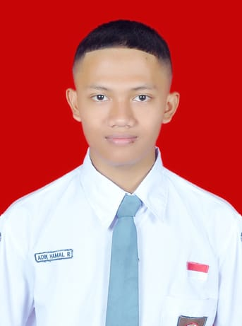

A complete overview of my education and experience

Student | Aspiring Network Engineer
| Full Name | : | Adik Hamal Rozaqi |
| Nickname | : | Adik |
| Place, Date of Birth | : | Semarang, 21 April 2009 |
| Gender | : | Male |
| Religion | : | Islam |
| Nationality | : | Indonesia |
| Address | : | Jl. Dempel Lor RT06 RW23, Semarang |
| Child No. | : | 4 of 4 siblings |
| Father's Name | : | Mujahidin |
| Mother's Name | : | Sri Jumiati |
Configuring routers, switches, VLANs, and routing protocols using Cisco Packet Tracer
Basic understanding of firewalls, ACLs, and network protection against common threats
Building responsive and well-structured static web pages
Adding simple interactivity to web pages
Creating graphic designs, posters, and professional visual content
Building and programming simple microcontroller-based IoT devices
Taman Kanak-Kanak
Elementary School — Semarang
Junior High School
Rekayasa Perangkat Lunak
Participant - SAC Competition 2025
2nd Place 3rd Persinas Asad Central Java Pasanggiri Championship 2024
Participant — GenerusFUN Juz Amma Memorization Competition 2023
Divisi Teknologi Informasi — SMP N 15 SEMARANG
Helping lead youth religious study activities at the mosque
"The more that you read, the more things you will know. The more that you learn, the more places you'll go."